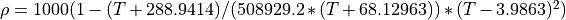
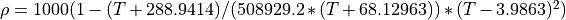
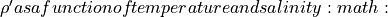
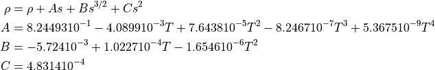

xopto.materials.density.water module¶
- class McCutcheon(t: float = 293)[source]¶
Bases:
xopto.materials.density.base.DensityDensity of water as given in: Water density as function of temperature and salt concentration McCutcheon, S.C., Martin, J.L, Barnwell, T.O. Jr. 1993. Water Quality in Maidment, D.R. (Editor). Handbook of Hydrology, McGraw-Hill, New York, NY (p. 11.3).
The density of water
 follows the folowing temperature T
(C o) dependence.

follows the folowing temperature T
(C o) dependence.
Water density  kg/m 3 as a function of temperature and salinity
 in g/kg.
in g/kg.
- Parameters
t (float) – Temperature of the medium (K).
- check_salinity(salinity: float)[source]¶
Check if the salinity is within valid range and display a warning if not.
- Parameters
salinity (float) – Salinity from 0.0 to 0.035.
- is_valid_salinity(salinity: float) → bool[source]¶
Check if the salinity is within the valid range.
- Parameters
salinity (float or np.ndarray) – Water salinity from 0.0 to 1.0.
- Returns
valid – True if the salinity is within the valid range.
- Return type
bool
- material = 'water'¶